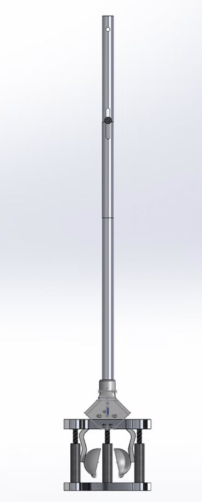

This device was engineered for golfers with limited mobility, back injuries, or joint issues. Existing market solutions often suffer from poor mechanical durability and lack tee-height adjustability. My goal was to create a reliable system that operates consistently across variable turf conditions.

Architecture
The functional prototype combines an aluminum tube frame, Dyneema tension lines, a 3D-printed ball-and-tee delivery cage, threaded height adjustment stops, and a wide wooden base for ground stabilization.
Testing
During user testing, first-time operators successfully teed up a ball within an average of 1.8 attempts, achieving a peak cycle time of 5.26 seconds.